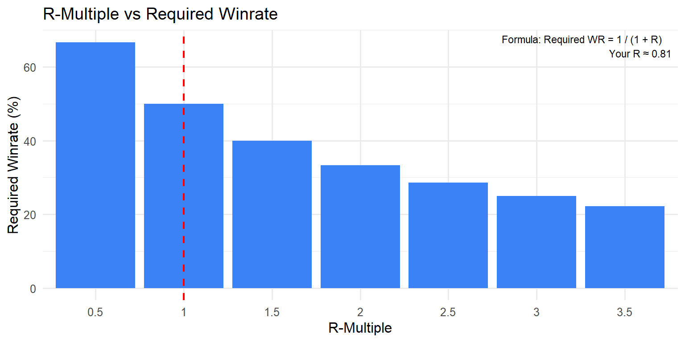
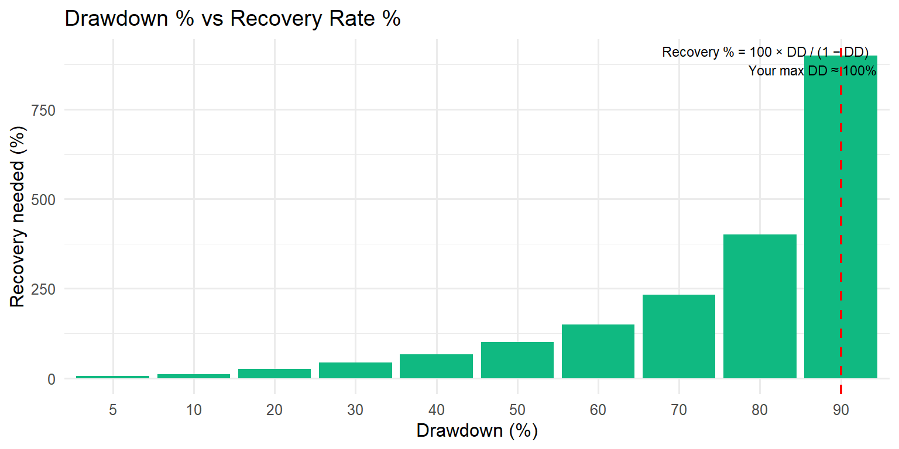
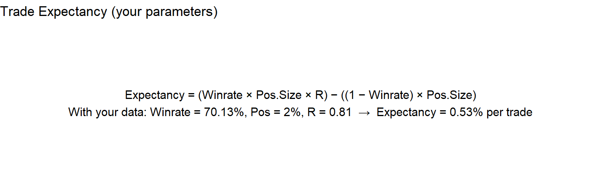
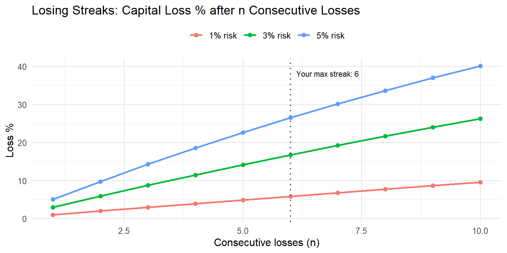

Show code
library(tidyverse)
library(scales)
library(arrow)
library(patchwork)
library(glue)This TidyTuesday builds the same six risk valuation matrices as the companion MakeoverMonday, using ggplot2: R-multiple vs required winrate, drawdown vs recovery rate, expectancy, losing streaks and capital loss, exponential growth, and consecutive-loss probability. Metrics are read from data/risk_metrics.parquet (generated by prepare_data.py).
library(tidyverse)
library(scales)
library(arrow)
library(patchwork)
library(glue)data_dir <- file.path(getwd(), "data")
risk_path <- file.path(data_dir, "risk_metrics.parquet")
if (file.exists(risk_path)) {
risk <- read_parquet(risk_path) %>% slice(1)
win_rate <- as.numeric(risk$win_rate_pct)
r_multiple <- as.numeric(risk$r_multiple)
max_dd <- as.numeric(risk$max_drawdown_pct)
max_streak <- as.integer(risk$max_consecutive_losing_days)
account_jpy <- as.numeric(risk$account_size_jpy)
pos_pct <- as.numeric(risk$position_size_pct)
cat("Loaded risk_metrics: WR =", win_rate, "%, R =", r_multiple, ", max DD =", max_dd, "%, max streak =", max_streak, "\n")
} else {
win_rate <- 55; r_multiple <- 1.5; max_dd <- 10; max_streak <- 3
account_jpy <- 1e7; pos_pct <- 2
cat("Using default risk metrics (run prepare_data.py to use your data)\n")
}Loaded risk_metrics: WR = 55 %, R = 1.5 , max DD = 0 %, max streak = 0 r_vals <- seq(0.5, 3.5, by = 0.5)
req_wr <- 100 / (1 + r_vals)
tbl1 <- tibble(r_multiple = r_vals, required_winrate_pct = req_wr)
p1 <- ggplot(tbl1, aes(x = factor(r_multiple), y = required_winrate_pct)) +
geom_col(fill = "#3b82f6") +
geom_vline(xintercept = which.min(abs(r_vals - r_multiple)), linetype = "dashed", color = "red", linewidth = 0.8) +
annotate("text", x = Inf, y = Inf, label = glue("Formula: Required WR = 1 / (1 + R)\nYour R ≈ {round(r_multiple, 2)}"), hjust = 1.1, vjust = 1.2, size = 3) +
labs(title = "R-Multiple vs Required Winrate", x = "R-Multiple", y = "Required Winrate (%)") +
theme_minimal(base_size = 12)
p1
dd_pcts <- c(5, 10, 20, 30, 40, 50, 60, 70, 80, 90)
recovery <- 100 * dd_pcts / (100 - dd_pcts)
tbl2 <- tibble(drawdown_pct = dd_pcts, recovery_pct = recovery)
p2 <- ggplot(tbl2, aes(x = factor(drawdown_pct), y = recovery_pct)) +
geom_col(fill = "#10b981") +
geom_vline(xintercept = which.min(abs(dd_pcts - max_dd)), linetype = "dashed", color = "red", linewidth = 0.8) +
annotate("text", x = Inf, y = Inf, label = glue("Recovery % = 100 × DD / (1 − DD)\nYour max DD ≈ {round(max_dd, 0)}%"), hjust = 1.1, vjust = 1.2, size = 3) +
labs(title = "Drawdown % vs Recovery Rate %", x = "Drawdown (%)", y = "Recovery needed (%)") +
theme_minimal(base_size = 12)
p2
wr_dec <- win_rate / 100
exp_pct <- (wr_dec * pos_pct * r_multiple) - ((1 - wr_dec) * pos_pct)
p3 <- ggplot() +
annotate("text", x = 0.5, y = 0.5, label = glue(
"Expectancy = (Winrate × Pos.Size × R) − ((1 − Winrate) × Pos.Size)\n",
"With your data: Winrate = {win_rate}%, Pos = {pos_pct}%, R = {round(r_multiple, 2)} → Expectancy = {round(exp_pct, 2)}% per trade"
), size = 4, hjust = 0.5, vjust = 0.5) +
scale_x_continuous(limits = c(0, 1)) +
scale_y_continuous(limits = c(0, 1)) +
labs(title = "Trade Expectancy (your parameters)") +
theme_void()
p3
n_losses <- 1:10
risks <- c(0.01, 0.03, 0.05)
tbl4 <- expand_grid(n = n_losses, risk_pct = risks) %>%
mutate(loss_pct = 100 * (1 - (1 - risk_pct)^n), risk_lab = paste0(risk_pct * 100, "% risk"))
p4 <- ggplot(tbl4, aes(x = n, y = loss_pct, color = risk_lab)) +
geom_line(linewidth = 1) +
geom_point(size = 2) +
geom_vline(xintercept = max_streak, linetype = "dotted", color = "gray40", linewidth = 0.8) +
annotate("text", x = max_streak, y = max(tbl4$loss_pct) * 0.95, label = glue("Your max streak: {max_streak}"), hjust = -0.1, size = 3) +
labs(title = "Losing Streaks: Capital Loss % after n Consecutive Losses", x = "Consecutive losses (n)", y = "Loss %", color = NULL) +
theme_minimal(base_size = 12) +
theme(legend.position = "top")
p4
E <- exp_pct / 100
account_0 <- if (account_jpy > 0) account_jpy else 1e7
account_m <- round(account_0 / 1e6, 1)
n_trades <- c(1, 10, 50, 100, 200, 500)
gain_per <- account_0 * ((1 + E)^n_trades - 1) / n_trades
tbl5 <- tibble(n_trades = factor(n_trades), gain_million_jpy = gain_per / 1e6)
p5 <- ggplot(tbl5, aes(x = n_trades, y = gain_million_jpy)) +
geom_col(fill = "#8b5cf6") +
labs(
title = glue("Gain per Trade (million JPY) — Account ¥{account_m}M, Expectancy {round(exp_pct, 2)}%"),
x = "Number of trades", y = "Gain per trade (million JPY)"
) +
theme_minimal(base_size = 12)
p5
winrates <- seq(30, 70, by = 5)
k_streaks <- 1:5
tbl6 <- expand_grid(winrate_pct = winrates, k = k_streaks) %>%
mutate(prob_pct = 100 * (1 - winrate_pct/100)^k)
p6 <- ggplot(tbl6, aes(x = factor(k), y = factor(winrate_pct), fill = prob_pct)) +
geom_tile(color = "white", linewidth = 0.3) +
geom_text(aes(label = sprintf("%.1f%%", prob_pct)), size = 2.8) +
scale_fill_gradient(low = "white", high = "darkred", name = "P(k losses) %") +
geom_hline(yintercept = which.min(abs(winrates - win_rate)), linetype = "dashed", color = "blue", linewidth = 0.8) +
labs(
title = "P(k consecutive losses) by Winrate — your winrate highlighted",
x = "Consecutive losses (k)", y = "Winrate (%)"
) +
theme_minimal(base_size = 11) +
theme(panel.grid = element_blank())
p6
This post is part of the TidyTuesday weekly data visualization project.